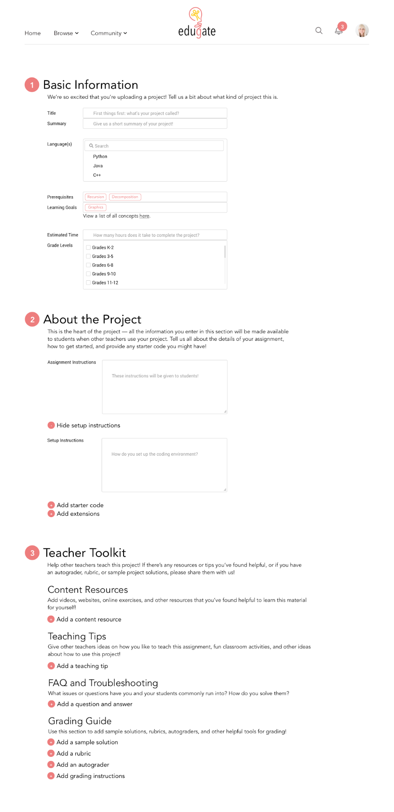
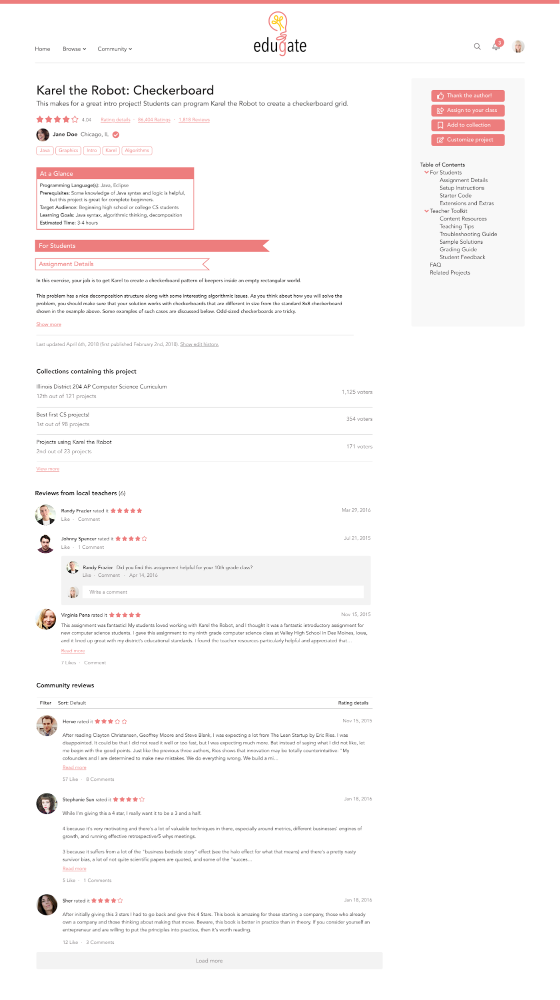

Edugate: Closing the Gap Between Teaching and Learning
A collaborative, crowd-sourced platform for creating and sharing CS curriculum, designed to empower any teacher, of any background, to teach computer science.
A collaborative, crowd-sourced platform for creating and sharing CS curriculum, designed to empower any teacher, of any background, to teach computer science.
The mission of EduGate is to empower any teacher, of any background, to teach computer science. We are a free, collaborative, crowd-sourced platform for creating and sharing CS curriculum with other teachers, with a particular focus on giving teachers the resources they need to quickly build confidence and competence in CS. Our vision is to equip any teacher with an interest in teaching CS with the means to do so.
This project was done in partnership with Facebook's Education Modernization team. We were tasked to address equity and diversity in computer science education, particularly to engage predominanty Free and Reduced Lunch (FRL) high school students. We decided to focus on the population of students who did not have the opportunity to learn computer science, which led us to interview students, teachers, and administrators to understand high school computer science education (one particular interview is summarized here). Through interviews, surveys, and other research, we learned that lack of budget and lack of trained computer science teachers prevent many schools from offering computer science classes. Frequently, teachers from other disciplines, such as math and science, were being asked to teach computer science despite having no prior background; because these teachers were already so overworked, they experienced high stress and felt unprepared to teach the subject. These insights led us to our vision for Edugate -- creating a local and global community where teachers with any level of computer science background can connect and share resources. We hope the platform can be particularly useful for new teachers to quickly find curricula and assignments specific to their students, allowing them to deliver high-quality, project-based computer science education to their students with minimal time and training.
The main features of the website include:
We designed a series of advertisements and ran an ad campaign on Facebook to answer some questions about our target user base and build contacts potential early users. I did the graphic design for these ads.
Ideas for future work, based on interviews and user feedback, include:
Upload an assignment
View an assignment
This projected was developed for Software Project Experience with Corporate Partners (CS210), which I took during winter and spring 2018 at Stanford University. The course is a two-quarter project-based course that focuses on real-world software development on R&D challenges from corporate partners. Teams of students are treated like start-up companies, including a budget, advisory board, marketing, and investor pitches.
The project was done in partnership with two other students in the course. My contributions included assisting with interviews and needfinding, creating presentations and content, branding and graphic design, and the bulk of the software engineering work, particularly initial set-up of the app in Django, deployment to Heroku, creating models, adding assignment content, and more.
January - June 2018